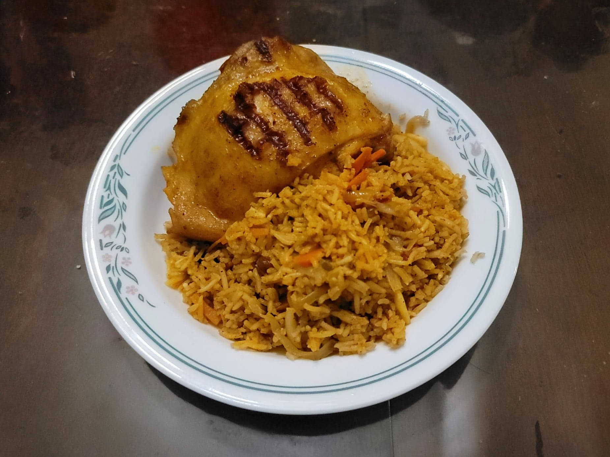

Chicken Kabsa

Ingredients:
Kabsa Spice Mix:
- 1/4 tsp Saffron
- 1/4 tsp Ground cardamom
- 1/4 tsp White pepper
- 1/2 tsp Cinnamon
- 1/2 tsp Allspice
- 1/2 tsp Dried lime powder
Chicken Kabsa:
- 3 lb Chicken thighs and/or legs
- 2 tbsp Oil, Ghee, or Butter
- 3 Onions, sliced
- 1 tbsp Ginger, grated or paste
- 1 tbsp Garlic, grated or paste
- 1 Green chilli, finely chopped
- 2 Bay leaves
- 6 Whole cloves
- 4 Whole cardamom
- 1 Cinnamon stick
- 2 tbsp Tomato paste
- 1/8 tsp Nutmeg
- 1/2 tsp Black pepper
- 1/2 tsp Coriander
- 1/4 tsp Cumin
- 3 medium Carrots, julienned
- 200 g Diced tomatoes, or roughly 3 Tomatoes chopped
- 2 Chicken bouillon cubes
- 3 cups Basmati rice, rinsed
- 1/4 cup Raisins
- 4 cups Water
- 1/4 cup Slivered almonds
Instructions:
- Heat the oil/butter in a large pot over medium-high heat.
- Add the onions, ginger, garlic and green chilies and sauté for about 7 minutes, or until onions are softened and just starting to brown. Then add the bay leaves, cloves, cardamom pods and cinnamon stick. Fry for about a minute or until fragrant.
- Add the tomato paste, nutmeg, black pepper, coriander, cumin and the kabsa spice mix. Lightly season with salt. Fry for about a minute or until fragrant. Then add the carrots and diced tomatoes. Stir to combine and let cook for about 2 minutes.
- Stir in the chicken bouillon and then add the chicken. Brown the chicken, stirring occasionally, for about 30 minutes, uncovered.
- Remove the chicken and reserve. Add in the rinsed rice, raisins, and the water to the pot. Season with salt to taste. Bring to a boil and then reduce to low. Cover and let simmer for 10-15 minutes.
- Preheat a grill. Lightly season the chicken with more salt to taste and some more kabsa spice if available. Grill for about 5-8 minutes per side or until cooked completely.
- Once the rice is done cooking, fluff with a fork and then mix in the almonds. Serve the chicken with the rice. Serve hot.